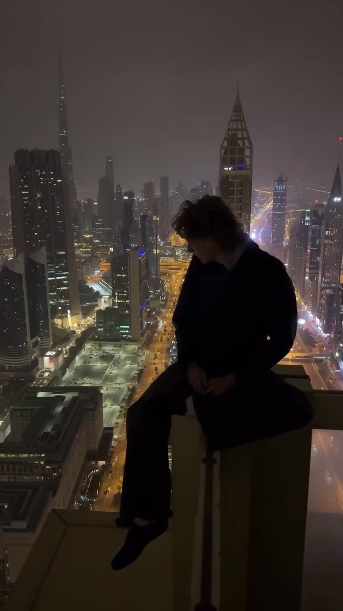

Shane Boyer and the gear behind the POV.
The 11.7M-view films don't happen by accident. Shane Boyer's cinematic New York is built on real craft and pro camera tools — the reason DGTL pairs him with gear brands like DJI, and why the footage looks like a short film.
 The craft
The craft
Follower/like/view figures verified July 2026 from Shane Boyer's own channels. DJI is listed among his brand partners per DGTL; the focus here is his verifiable craft and cinematic style.
Shane Boyer (@shaneboyerr) makes New York look like a short film, and that doesn't happen on a phone held at arm's length. Behind the 11.7M-view Polaroid cut and the 2.5M+ following is real craft — stabilised moves, patient framing, careful colour — the kind of work that makes gear brands like DJI a natural fit, and the reason DGTL pairs him with camera partners.
Look closely at a Boyer video and the technique is doing quiet, deliberate work. The camera glides where a handheld shot would shake; the frame holds long enough to feel composed, not grabbed. That control is what separates a POV film from a POV clip — and it's the difference a pro toolset buys a creator who already has the eye.

Craft is the reason the numbers exist
Boyer's signature moves — the ledge push-in, the platform pan as a train blurs by, the golden-hour glide over One World Trade — read as cinema because they're executed like cinema. Stabilisation, frame rate, and grade are the tools; taste is what points them. That combination is precisely what a gear brand wants associated with its name: not a spec demo, but proof of what the kit makes possible in the right hands.
Anyone can point a camera at New York. Boyer builds the shot.
— The DGTL Influence view on Shane BoyerWhy gear brands fit a creator like this
Because the best hardware ad is a great piece of work made with it. A creator who already shoots at this level makes a camera or gimbal look capable without a single feature callout — the footage is the argument. That's the logic behind pairing Boyer with camera partners like DJI: put pro tools in the hands of someone whose output already sells the possibility. You can study the technique on his TikTok and Instagram.

- The footage is the ad — pro results without a single feature callout.
- Stabilised, cinematic moves that show what the kit makes possible.
- A creator with the eye already — gear amplifies, it doesn't carry.
- 2.5M+ followers who value craft, the right room for a camera brand.
For a gear brand, that's the whole appeal: the most persuasive proof of what a camera can do is a filmmaker who was going to make something beautiful anyway. Give Shane Boyer the tools and the receipts show up in the footage.
The craft, frame by frame
Mood Signature
Signature Golden hour
Golden hour
Dream Craft
CraftA network people actually trust.
80+ vetted creators, matched to your brand — not bolted on. Let's scope an activation that moves real numbers.